Gravitational Energy Storage–Regeneration Systems for Existing Infrastructure
A measured weight-drop prototype, four candidate architectures, and their comparative simulation — recorded with full iteration history
Amaan S. Khan · Aiman Ullah · Kavin Paturu Muralikrishnan
Chantilly High School, Virginia — 2024 to present
Abstract
This record evaluates the energy efficiency of four small-scale gravitational
storage–regeneration concepts — buoyant displacement, electromagnetic assist (quasi-Halbach
tubular linear machine), dual-weight counterbalance, and variable counterweight — using
MATLAB simulation with strict end-to-end energy bookkeeping, calibrated against a physically
built and instrumented generation prototype. Each design is modeled under identical baseline
conditions (50 kg effective mass, 3 m travel) and assessed by electrical energy
generated per drop, electrical energy required for lift, discharge efficiency, and
per-channel loss attribution. The variable-counterweight architecture attains the highest
simulated discharge efficiency (77.0 ± 0.5 %); one-way ANOVA establishes
architecture as a significant factor (F(3,36) = 6.10, p < 0.001,
η² = 0.337). The complete component iteration history — including rejected
mechanisms — is preserved here and in the source repository.
Keywords: gravity battery, energy storage, regenerative elevator, quasi-Halbach array, tubular linear machine, discharge efficiency, engineering design process.
Intermittent renewable generation must be decoupled from consumption, and the dominant
storage answer — electrochemical batteries — carries energy-intensive mining, toxic
disposal, and per-cycle chemical degradation. Gravity storage keeps energy in the position
of a mass: mechanically simple, chemically inert, effectively unlimited in cycle life. At
grid scale it already works. Pumped hydro reaches 70–85 % round-trip
efficiency[5]; dry-mass towers, underground shaft
concepts[3], and piston
systems[2,6] are commercial or near-commercial.
The unsolved case is small scale. Grid-scale gravity plants are location-bound and
capital-heavy, and the literature points at buildings themselves as the untapped medium:
Lift Energy Storage Technology proposes elevator-borne mass transport in
high-rises[4], and elevator regenerative drives
with ultracapacitor buffering are an active research
area[7,8,9]. This project asks the question those
threads point toward but do not answer: which gravitational storage–regeneration
architecture, implemented inside existing infrastructure, recovers the largest fraction of
the energy invested in lifting?
The program proceeded in the only defensible order: first build and instrument a physical
generation prototype, so that every loss model is grounded in measured data (§2); then
design candidate architectures with full iteration discipline (§3); then compare them under
identical simulated conditions with statistical inference (§4–5).
2The generation prototype
2.1System architecture
The prototype converts gravitational potential energy to electrical energy through a
five-stage chain: barbell masses tied to polypropylene rope, redirected by a pulley, wound
on a drum, geared up, and delivered to a DC machine operating as a generator. A nine-foot
wooden scaffold carries the drop path. Lateral sway during early trials measurably reduced
energy transfer, so a weight-box enclosure was added to constrain the mass to vertical
travel — itself an iteration response rather than part of the first design.
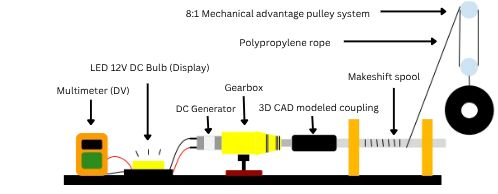
Architecture of the generation prototype: masses → rope → pulley → hoist drum → gearbox → generator. Drawing reproduced from the engineering logbook.
documents/logbook, Part I — measured system
2.2Component iteration record
The logbook records every configuration tried, its failure mode, and the engineering
response. Nothing that failed is omitted; the failures carry the design rationale.
Gearbox — four generations
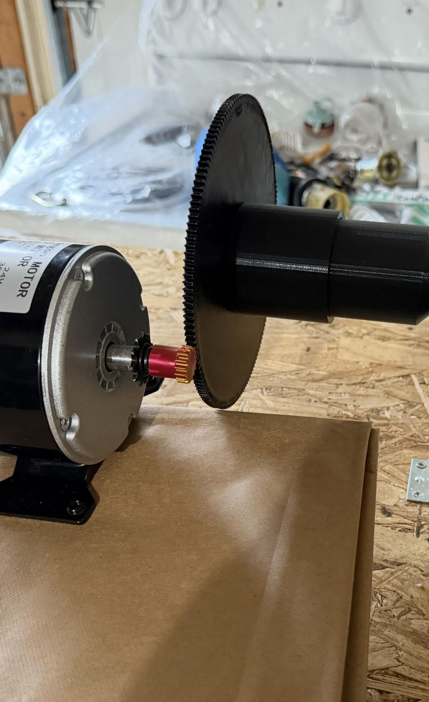
Iteration 1 as built — Vex/Lego compound.
Iteration 1 — compound gearbox, Vex/Lego components (≈$15).
A ~200-tooth gear meshed an ~18-tooth pinion at small module size. Under load the gears
slipped, and meshing gaps produced dropouts in the generation output. The response was to
increase tooth thickness and module and move to a stackable architecture with proper
bearings. superseded.
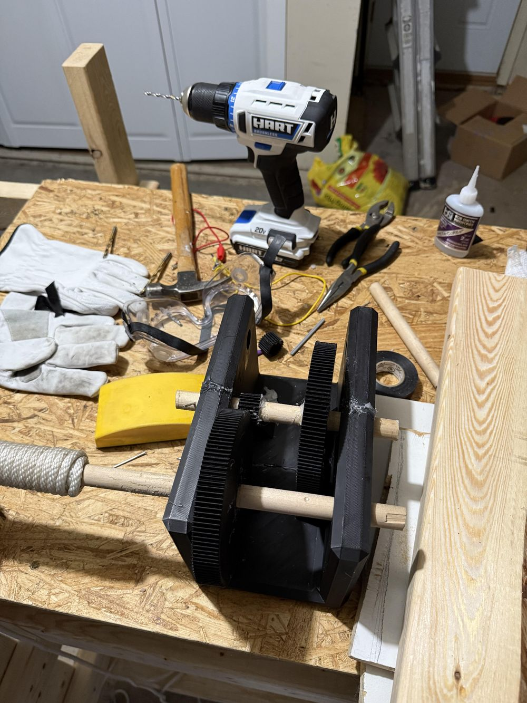
Iteration 2 — laser-cut stackable spur.
Iteration 2 — compound stackable spur gearbox (≈$10).
Laser-cut wooden structure, progressive RPM amplification across stages, ball bearings at
key shafts. It functioned, but spur-contact losses across multiple stages capped
efficiency below target. superseded.
Iteration 3 — planetary gearbox (≈$18).
Evaluated for its compact torque-and-speed amplification — the drill-gearbox architecture.
Rejected without a full build: frictional losses inherent to the geometry and
prototype-scale complexity outweighed the projected gain.
rejected.
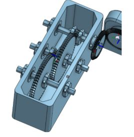
Iteration 4 — double-helix spur, final design.
Iteration 4 — double-helix spur gearbox (≈$13).
Double-helix spur gears engineered for high speed and load, cut in polycarbonate. Round
dowel shafts, whose non-circular cross-sections caused torque fluctuation, were replaced
with aluminum hex shafts; standard ball bearings were replaced with angular-contact
bearings, since the load carries both radial and axial components; dual hinge shaft
collars restrict lateral gear movement under load. Teflon washers and a
polycarbonate–nylon composite remain under evaluation.
final design.
Mechanical connections
The first build joined spool-to-gearbox and gearbox-to-machine with custom 3D-printed PLA
couplers (≈$0.50). Slight axial misalignment multiplied torque demand under load; the
couplers vibrated and failed. Research into industrial practice replaced couplers entirely:
a chain–sprocket stage at spool-to-gearbox (FRC robotics practice for high-load
transmission) and a 1:1 bevel-gear stage at gearbox-to-machine. The bevel stage adds a
little friction but buys a necessary 90° redirection of the rotational axis, and both
connections tolerate misalignment and allow ratio tuning.
Rope winding — from spool to hoist drum
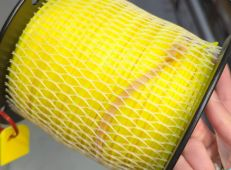
Iteration 1 — trimmer spool.
Iteration 1 — modified weed-whacker spool (≈$12.50).
A trimmer spool stores line; it does not control unwinding. Under dynamic load the rope
tangled and tension varied, and the spool ran without bearings.
superseded.
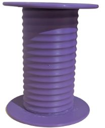
Iteration 2 — cleated drum, Onshape.
Iteration 2 — cleated hoist drum with rope guide.
Industrial lifting hardware makes the distinction that matters: a hoist drum carries
cleats — grooves matched to the rope profile that enforce a standard winding path. A cleat
structure was designed in Onshape and fitted over the existing spool geometry, with an
industrial-style rope guide. Tangling was eliminated in both winding directions; the drum
was reprinted and refined again in the 2026 rebuild.
final design.
Pulley and weight stabilization
The block-and-tackle used for mechanical advantage introduced one friction point per
sheave; the final configuration simplifies to a single redirecting pulley (≈$27.50 with
rigging), greased at the rope contact. The weight box described in §2.1 completed the drop
path.
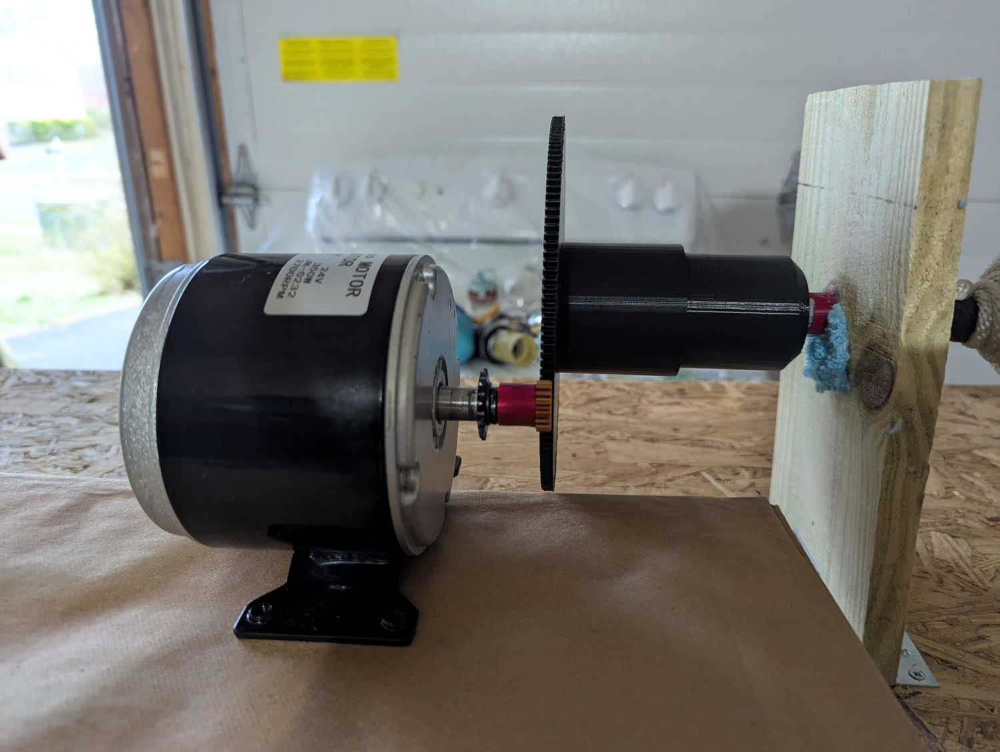
The drivetrain as built, March 2025: cleated hoist drum coupled through the gearbox to the BLDC machine.
prototype-2024-25/photos — measured system
2.3Machine selection
The first generator, a brushed DC unit (≈$17.25), lost output to brush friction, brush
wear, and high internal resistance. Its replacement was selected with a consulted motor
engineer against the application's defining constraint: gravitational drop speeds are low,
so the machine must produce usable voltage at low shaft speed — high stall torque, low
Kv, minimal internal resistance. No inrunner met the combined requirement; the
survey settled on an outrunner rated for industrial drone propulsion.
Specification of the selected machine. The same model parameterizes every simulation in §4–5, closing the loop between hardware and model.
Parameter
Value
Parameter
Value
Machine
Turnigy Aerodrive SK3-5065-236KV, BLDC outrunner
Poles / slots
14P / 12N
Kv
236 rpm·V⁻¹
Max continuous current
60 A
Rm, phase–phase
19 mΩ
Max power
1 850–2 000 W
Kt (derived, Eq. 5)
≈ 0.0405 N·m·A⁻¹
Mass
530 g
Operating efficiency, est.
85–92 %
Bearings
double-shielded, front support
2.4Measured characterization
Drop trials at four mass levels (10, 15, 20, 25 kg; three trials each; ≈2.5 m
drop) were instrumented with a multimeter. Efficiency rises with mass because fixed
friction terms amortize over a larger gravitational input — peak 28.7 % end-to-end at
25 kg, with 8.23 V mean output and roughly 45 W average electrical power.
These trials are the calibration target for every loss parameter in the §4 model.
Measured characterization of the prototype: mean output voltage (left) and end-to-end efficiency (right) against dropped mass; three multimeter trials per level.
prototype-2024-25/data/measured_results.csv — measured
Note. Recorded drop height varies across the primary documents —
2 m in the research plan, 2.5 m in the analysis script, ~2.7 m in the logbook.
The frame was rebuilt more than once; the discrepancy is flagged in §10 rather than silently
reconciled.
3Four storage architectures
With the generation chain validated, the design question forked: where in the built world
do masses already rise and fall, and which lifting mechanism wastes the least of what it
stores? Four architectures were carried to full design; none has yet been built at
architecture scale — the §5 numbers are calibrated simulation. A fifth concept, a
street-lamp gravity battery, was designed and dropped before simulation; it survives only
in team correspondence, an honest artifact of scope narrowing in fall 2025.
3.1Buoyancy system — storage
Energy is stored by lifting the mass with Archimedes' force rather than a motor: flood a
chamber and a flotation body strapped to the mass rises; drain it and the mass descends
through the generation chain. The net lift is given by Eq. 6.
Iteration 1 — bottom-pump chamber with pneumatic release.
Pneumatically actuated drain ports added cost and complexity disproportionate to
function. rejected.
Iteration 2 — three-chamber configuration.
Two side reservoirs pumped into a central travel chamber, trapdoor return. Functional but
inefficient, and the trapdoor added control complexity.
superseded.
Iteration 3 — dual-layer chamber.
An upper reservoir floods an outer chamber; water enters the inner travel chamber only
through a bottom gap, so buoyant force develops without wetting rope or mass — wet rope
raises friction sharply, and the wooden structure would swell. Three turbines in the
falling-water path add supplementary generation; a check-valved vertical pump recharges
the upper reservoir. One sub-problem required its own mechanism: buoyant lift puts the
rope in compression, which rope cannot carry, so a high-torque idler between pulley and
drum maintains active tension through the lift phase.
final design.
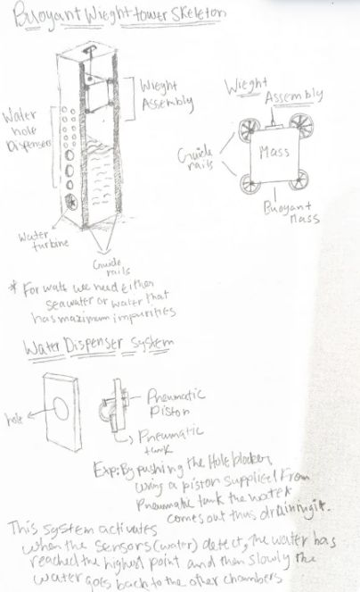
(a) dual-layer chamber
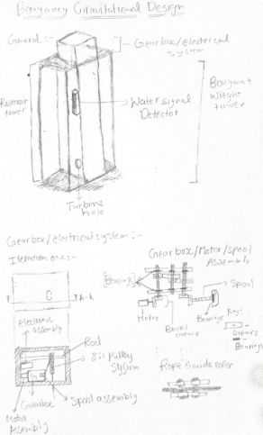
(b) charge–discharge cycle
Buoyancy storage system, final design. Logbook drawings; simulated in §5, not yet built.
documents/logbook, Part II — in design
3.2Halbach tubular linear machine — storage, electromagnetic
The electromagnetic branch asks whether the lifting chain can be removed entirely: no
rope, no drum, no gearbox on the way up. Its iteration record is the project's longest
chain of rejected concepts.
Iteration 1 — fixed electromagnet pair, top and bottom.
Field strength must scale with the full travel column; electromagnet size and cost scale
prohibitively, and a static field cannot adapt to variable load.
rejected.
Iteration 2 — the weight as an electromagnet.
A soft-iron mass wound with coils, reacting against permanent magnets on the rails.
Manufacturing a massive wound electromagnet is exactly the cost structure commercial
gravity storage avoids — Energy Vault's masses are compacted waste material for a reason.
rejected.
Iteration 3 — flat linear motor.
Linear motors convert electrical energy directly to translation, skipping the
rotary-to-linear stage of an actuator — maglev propulsion. But planar geometry leaks flux
and cannot develop the thrust density vertical lifting demands.
rejected.
Iteration 4 — tubular linear machine, T-shaped quasi-Halbach magnetization.
Cylindrical Halbach arrays concentrate flux toward the bore — about 1.2 T — and
finite-element results in the literature show T-shaped and trapezoidal quasi-Halbach
magnet structures superior to rectangular ones in thrust force, power density, and
cogging[1]. The final architecture places four
tubular linear machines on the mass's shell, inward-pointing T-shaped Halbach rails, and a
six-phase stacked coil arrangement; travel is contact-free. This is the current research
direction (§8) — lowest simulated efficiency in §5, retained for its controllability and
mechanical simplicity. final design, active.
Recorded and self-corrected. A descent concept combining
gravitational and eddy-current forces — cutting translator excitation at top of stroke so
the falling conductor generates through the Halbach field — was explored on paper. The
logbook itself notes the correction: the eddy interaction brakes descent rather than
accelerating it, and no configuration returns more than was stored. Retained as a
documented exploration, rejected.
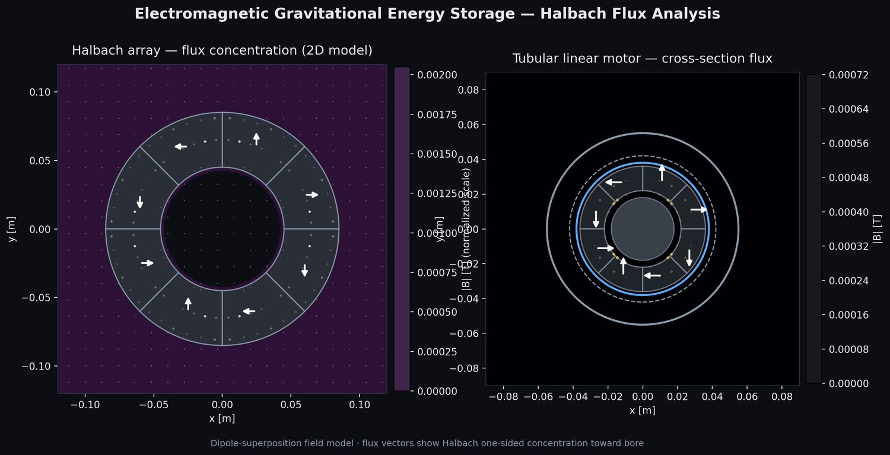
(a) flux concentration toward the bore
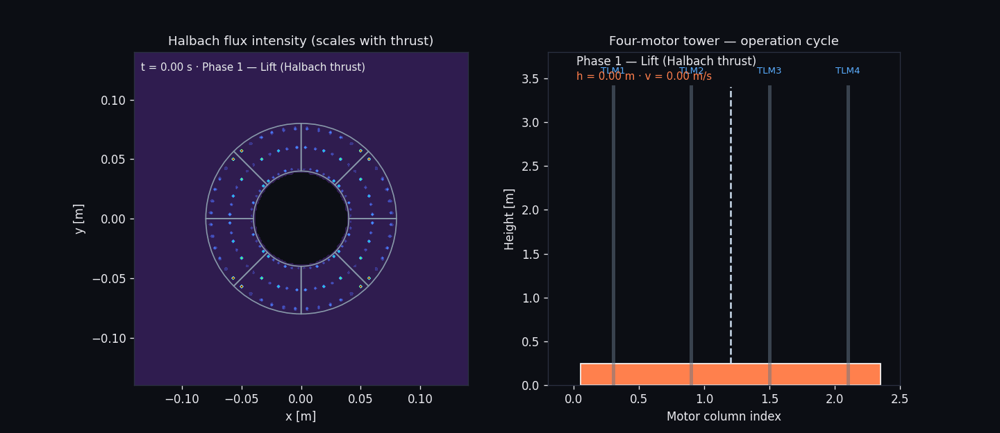
(b) charge–discharge cycle, animated model
Halbach field model: ring-array flux computation and the cycle animation whose physics drive the §6 demonstration telemetry.
interactive-demos/halbach-viz/physics/halbach_field.py — computed
3.3Dual-weight system — regenerative
Traction elevators already contain the mechanism: cab and counterweight coupled over a
sheave, the counterweight sized near half of rated cab load. The dual-weight system applies
that machine-room topology directly — two hoist drums on a common shaft, ropes wound in
opposition, one BLDC machine generating on both directions of travel. Two variants are
recorded: an elevator-integration model, a retrofit generation module switched in polarity
on cab direction, whose commercial analogue is the regenerative
drive[7,9]; and the free-standing simulation model
used in §5. The key insight in the logbook is the one that seeds §3.4: with matched masses,
the descending weight lifts the ascending one, and the machine pays only imbalance plus
friction. A self-locking hold mechanism for controlled release between cycles remains an
open design item.
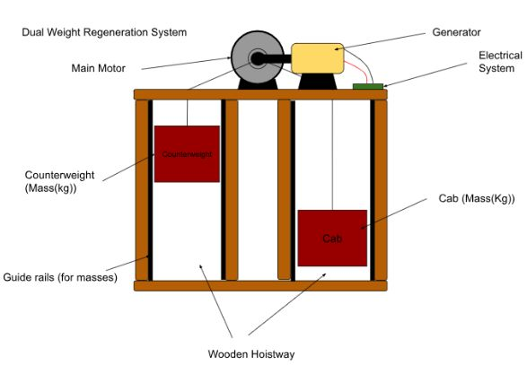
(a) logbook mechanism drawing
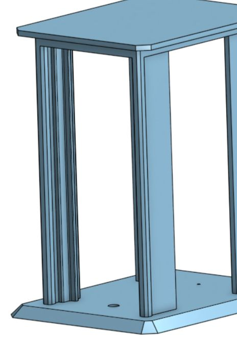
(b) guide rail and model hoistway, Onshape (K. PM)
Dual-weight regeneration system.
documents/logbook, Part IV · cad/team — in design
The variable counterweight was not conceived as a battery. It emerged from elevator
counterweight sizing research: real counterweights are optimized per building — height,
traffic pattern, rated load — not fixed at half capacity. If a counterweight can be
optimized statically, it can be matched dynamically: sensors read the primary load, and
modular masses deploy or retract to bring net imbalance toward zero, so the machine
supplies only friction and residual imbalance on every ascent.
The mechanism carries two mass populations. A primary cabled mass rides the generation
chain. Modular magnetic barbell masses — each wound with electromagnet coils for docking —
carry guide-roller generators that charge onboard supercapacitors during module descent,
discharged to the building bus at the docking checkpoint: secondary recovery on top of
primary generation. Module electronics exist on paper only; the whole architecture is
simulation plus CAD, and §10 lists it among unbuilt claims.
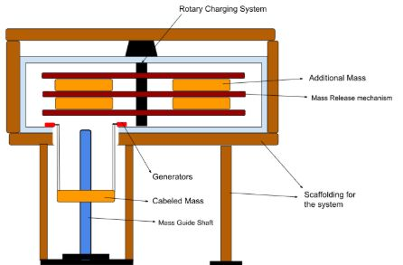
(a) logbook design drawing
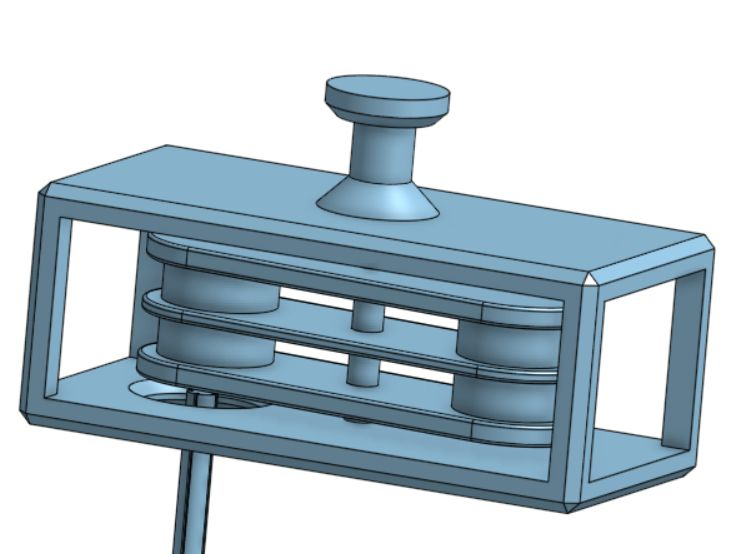
(b) mechanism CAD, Onshape (K. PM, 2025)
Variable-counterweight system: modular mass deployment against the primary cabled mass. Highest simulated discharge efficiency of the four (§5).
documents/logbook, Part V · cad/team — in design
4Mathematical model and simulation protocol
All four architectures share one physics core; each contributes a system-specific loss
channel on top. Bookkeeping is end-to-end and resolved per timestep — loss terms are
functions of instantaneous velocity, not static averages applied after the fact.
$$E_g = m\,g\,\Delta h$$
Stored energy per cycle. At the 50 kg / 3 m baseline, Eg = 1471.5 J, identical for every system.
Discharge efficiency, the primary metric — the same measure used to rate pumped hydro and lithium-ion, which is what makes the benchmark comparison in §5 legitimate.
Machine model of the SK3-5065 (Table 1); Kt is derived from the Kv rating, not quoted.
$$F_b = \rho_{\mathrm{w}}\,V_{\mathrm{disp}}\,g - m g - F_{\mathrm{drag}}(v)$$
Net buoyant lift in the §3.1 chamber.
4.1Protocol
Common baseline. 50 kg effective mass, 3 m travel, identical drum, gear ratio, rope, and machine model across all four systems; only the architecture differs.
Calibration. Friction coefficients and machine efficiency fitted to the §2.4 multimeter data before any comparison was run.
System-specific losses. Variable counterweight: mass-transfer energy cost. Dual weight: drum friction and rope routing. Buoyancy: fluid drag and pump work. Halbach: coil and braking resistance.
Replication. Ten runs per system, machine efficiency perturbed ±2 % and friction ±5 %, representing run-to-run uncertainty.
Inference. One-way ANOVA across systems on discharge efficiency and net energy per cycle; effect size by η².
Sensitivity. All friction parameters swept ±20 %; ranking invariance checked.
5Results and statistical analysis
Discharge efficiency by architecture: mean of ten perturbed replicates per system, whiskers ±1 SD. Shaded bands mark benchmark ranges for pumped hydro (70–85 %) and lithium-ion (85–92 %)[5]. The variable counterweight enters the pumped-hydro band.
matlab/outputs/presentation_replicates.csv — simulatedLoss attribution per cycle, ordered by drivetrain position. The ranking mechanism is visible at a glance: the regenerative architectures nearly eliminate the system-specific channel that dominates the storage systems.
matlab/outputs/loss_breakdown_figures.csv — simulated
Summary of record. All net energies are negative, as thermodynamics requires; systems are ordered by how much of the lift investment each returns.
System
Class
DE, mean ± SD
Eout/cycle
Net E/cycle
Cycle time
Cycles → 1 kWh
Variable counterweight
regenerative
77.0 ± 0.5 %
1 133 J
−0.1 kJ
8.0 s
3 177
Dual weight
regenerative
60.0 ± 1.2 %
883 J
−0.6 kJ
6.0 s
4 077
Buoyancy
storage
39.5 ± 1.8 %
581 J
−2.8 kJ
46.2 s
6 196
Halbach linear
storage
27.0 ± 2.1 %
397 J
−3.3 kJ
9.7 s
9 068
Inference. One-way ANOVA across the four systems gives, for discharge efficiency,
F(3,36) = 6.10, p < 0.001, η² = 0.337, and for net energy
per cycle F(3,36) = 5.95, p < 0.001, η² ≈ 0.331.
Architecture explains roughly a third of the observed variance, and the ranking is stable
under the ±20 % friction sweep. Replicate-level data ships in the repository; the
ANOVA is recomputable from presentation_replicates.csv.
Interpretation. Discharge efficiency is set by how much net work the machine must
do against gravity per cycle. The variable counterweight drives net imbalance toward zero,
reducing its loss budget to drivetrain friction — 305 J per cycle. The buoyancy and
Halbach systems pay a full lift-energy toll through pumping and coil losses respectively —
1 680 and 3 100 J per cycle — and the gap compounds linearly with cycling.
6Interactive demonstrations
Each architecture has a browser demonstration whose motion is driven by the corresponding
cycle model; the Halbach scene runs a live JavaScript port of the §4 physics with telemetry
readout. Scenes are two to six megabytes and load on demand.
Load demonstration
2–6 MB · WebGL · desktop recommended
drag to orbit · scroll to zoom · panels show live cycle stateopen full-page ↗
7Computational apparatus
Two MATLAB codebases exist deliberately. The January 2026 framework is a full
electromechanical ODE model, documented file-by-file in the LaTeX reference
(TECHNICAL_DOCUMENTATION.pdf);
the March 2026 pipeline is the rebuilt, calibrated comparison whose outputs are the §5
results of record.
7.1Comparison pipeline — results of record
four-systems-2025-26/simulation-four-systems/matlab/
├── config.m — constants, machine specification, run protocol
├── physics_core.m — PE, friction, gearbox and machine losses; descent ODE, Eqs. 1–5
├── systems/run_cycle_variable_cw.m — adds mass-transfer cost
├── systems/run_cycle_dual_weight.m — adds drum friction, rope routing
├── systems/run_cycle_buoyancy.m — adds drag and pump work, Eq. 6
├── systems/run_cycle_halbach.m — adds coil and braking resistance
├── run_simulation.m — ten perturbed replicates per system
├── metrics.m — summary table, one-way ANOVA
└── plotting.m → outputs/ — the CSVs behind Figures 8–9
# results of record (MATLAB R2016b+)
cd four-systems-2025-26/simulation-four-systems
addpath('matlab'); addpath('matlab/systems');
run_presentation_plots_dark % figures + CSV -> matlab/outputs/
main % full ode45 run, replicates, ANOVA# demonstrations (Node 18+)
cd interactive-demos && npm install && npm run dev
# Halbach field figures + cycle animation (Python 3.10+)
cd interactive-demos/halbach-viz
pip install -r requirements.txt && python run_all.py
8Applications and current work
Elevator retrofit. The regenerative pair (§3.3, §3.4) maps onto traction-elevator
infrastructure: cab and counterweight already exist, modular masses stage at floor landings,
and regeneration occurs on every trip rather than only under favorable load, as in current
commercial drives[7,9]. Representative elevator
dimensional analysis toward this application was performed during summer work at Virginia
Tech (§10).
Water infrastructure. The buoyancy system targets coastal facilities, treatment
plants, and water towers, where the working fluid and vertical plumbing already exist.
Electromagnetic direction. Active design work continues on the quasi-Halbach
tubular machine — the architecture with the fewest moving parts and full position control —
and on the concept manuscript in documents/concept-paper/, a draft whose
placeholder values are flagged in-source. One boundary is kept explicit: linear-machine dry
gravity storage exists at industrial scale in the literature; the contribution pursued here
is the student-scale comparative architecture study, not a novelty claim on linear
machines.
9Program record
Where the work was developed and presented. The curated photographic record is on the
photographs page; the dated chronology with file-level evidence
is TIMELINE.md in the repository.
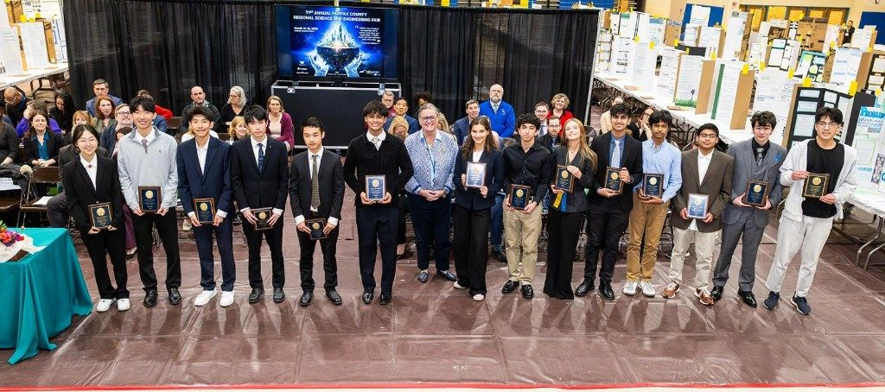
March 15–17, 2026. 71st Fairfax County Regional Science & Engineering Fair.
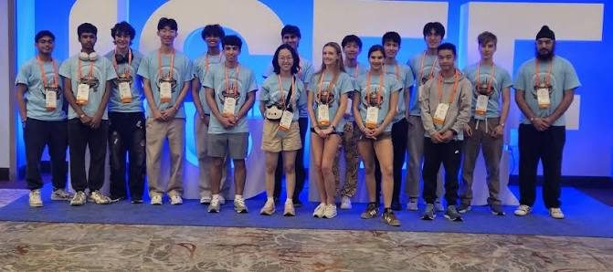
May 2026. Regeneron ISEF 2026.
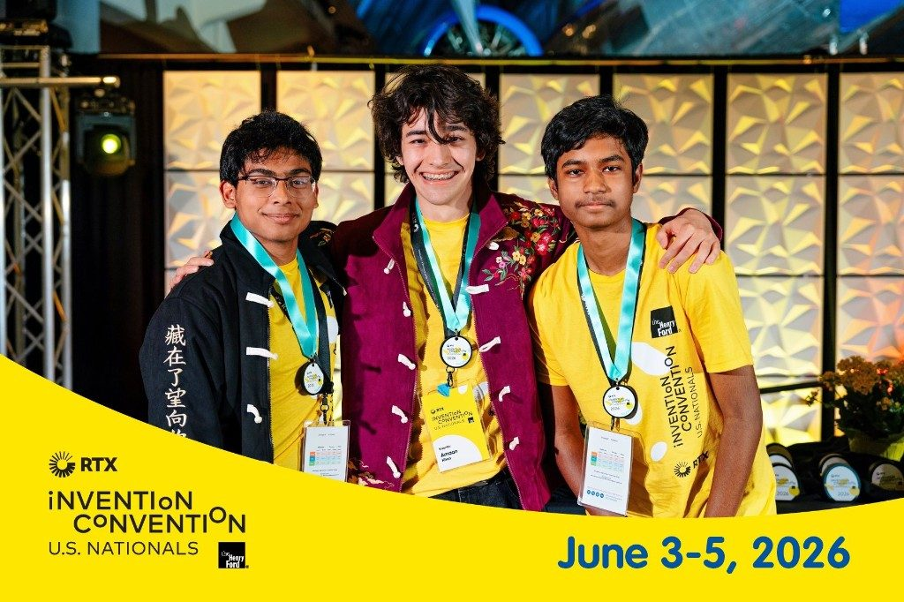
June 3–5, 2026. RTX Invention Convention U.S. Nationals.
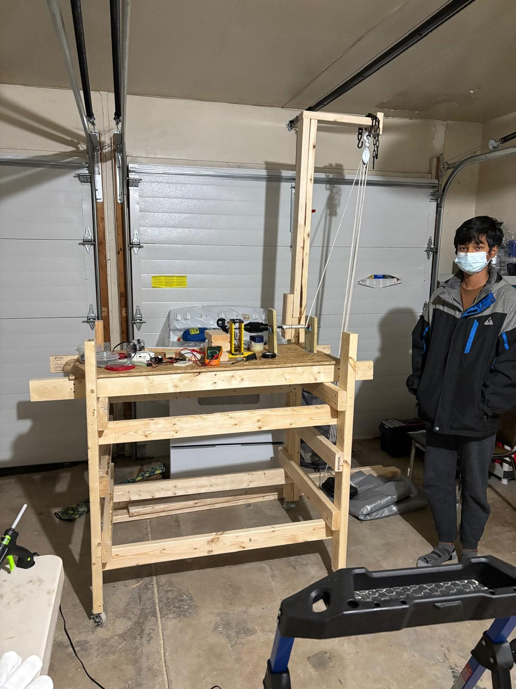
2024–2025. Chantilly HS fair and regional season — the Year-1 prototype.
10Provenance and limitations
Quantitative claims in this record fall into three classes: measured (multimeter
trials on the physical prototype, §2.4), simulated (the calibrated MATLAB pipeline,
§5), and in design (engineered on paper and in CAD, not yet built). Each figure and
table above names its class and source file. Three limitations govern interpretation; the
repository's PROVENANCE.md maintains the complete map.
The §5 numbers are simulations. None of the four architectures exists as a full
physical machine; loss models are calibrated to §2.4 but not validated against an
architecture-scale build. An earlier code generation (January 2026) reported higher
absolute values — 89.7 % for the variable counterweight — before the calibrated
rebuild. Both codebases and their outputs are preserved, including the presentation-script
draft in which the team flagged its own electromagnetic-model error.
Attribution gaps are flagged, not filled. The summer-2025 internship host and
the mentor referred to as "Dr. Jim" are under-documented in primary sources; the drop
height appears as 2, 2.5, and 2.7 m across documents; the origin of two 3D-print STL
sets is unconfirmed.
Placements are not claimed. §9 documents participation; award outcomes are not
stated in the archived files and are therefore not stated here.
—References
Kermani, M., Rahideh, A., and Moamaei, P. (2018). Analysis of tubular linear motors for different shapes of magnets. IEEE. Basis for the T-shaped quasi-Halbach selection in §3.2.
Elsayed, M. E. A., Abdo, S., Attia, A. A. A., Attia, E.-A., and Abd Elrahman, M. A. (2022). Parametric optimisation for the design of gravity energy storage system using Taguchi method. Scientific Reports 12, 19648.
Hunt, J. D., Zakeri, B., Jurasz, J., et al. (2023). Underground gravity energy storage: a solution for long-term energy storage. Energies 16(2), 825.
Hunt, J., Nascimento, A., Zakeri, B., et al. (2022). Lift Energy Storage Technology: a solution for decentralized urban energy storage. Energy 254, 124102.
Luo, X., Wang, J., Dooner, M., and Clarke, J. (2015). Overview of current development in electrical energy storage technologies and the application potential in power system operation. Applied Energy 137, 511–536.
Ruoso, A. C., Caetano, N. R., and Rocha, L. A. O. (2019). Storage gravitational energy for small scale industrial and residential applications. Inventions 4(4), 64.
Kermani, M., Shirdare, E., Abbasi, S., Parise, G., and Martirano, L. (2021). Elevator regenerative energy applications with ultracapacitor and battery energy storage systems in complex buildings. Energies 14(11), 3259.
Zhang, Y., Yan, Z., Yuan, F., Yao, J., and Ding, B. (2019). A novel reconstruction approach to elevator energy conservation based on a DC micro-grid in high-rise buildings. Energies 12(1), 33.
Dalala, Z., Alwahsh, T., and Saadeh, O. Energy recovery control in elevators with automatic rescue application. ScienceDirect.
This page is generated from the EcoDrop repository — build photographs, measured data, CAD,
two simulation codebases, the engineering logbook, and competition materials from three
years of work. Figures are drawn directly from repository data files. To cite: Khan A. S.,
Ullah A., Paturu Muralikrishnan K. (2026), EcoDrop: gravitational energy
storage–regeneration systems, github.com/SquiddyScripts/ecodrop.